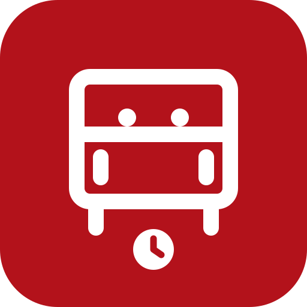

喺首頁輸入地標（商場、大廈、碼頭都得），揀個命中點就會列出 100／200／500 米內嘅巴士站；或者直接撳「用我位置，搵附近巴士站」用 GPS 定位。範圍列右邊有「地圖」掣，可以喺地圖上睇晒附近站。
喺附近站列表撳任何一個站，就會見到該站所有路線嘅實時到站時間，每 15 秒自動更新。撳任何一行路線，可以睇該路線全線站序同埋選中站嘅到站時間。
首頁撳「查點到點路線」，輸入起點同終點，會自動建議直達或轉一次車嘅巴士方案，並附上步行距離。到站時間頁同路線詳情頁右上的「查去處」掣，可以直接用該站做起點。
喺到站時間頁撳星號 = 記住常到車站；喺路線詳情頁撳星號 = 記住常搭路線。常用嘅嘢會自動出現喺首頁，方便一撣即達。常搭路線亦可自動統計（同一條線查看第二次起才計），唔想再見到可以逐項移除。
全港巴士站同路線站序已預先離線打包，冇網絡都搵到站、睇到站序；只有實時到站時間需要上網。安裝到主畫面（手機瀏覽器 → 「加入主畫面／安裝應用程式」）之後可以像一般 App 咁離線打開。
冇帳號、冇追蹤。搜尋記錄、常搭路線同 GPS 座標只會留喺你部機度（GPS 絕對唔會傳送畀任何第三方），可以喺選單「清除本機所有資料」一鍵刪除。
實時到站時間同路線資料來自運輸署開放數據（九巴及龍運、城巴及新巴），地圖底圖同地標搜尋來自 OpenStreetMap。本 App 非任何巴士公司或政府部門官方產品，班次資料以現場為準。